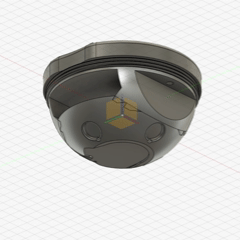
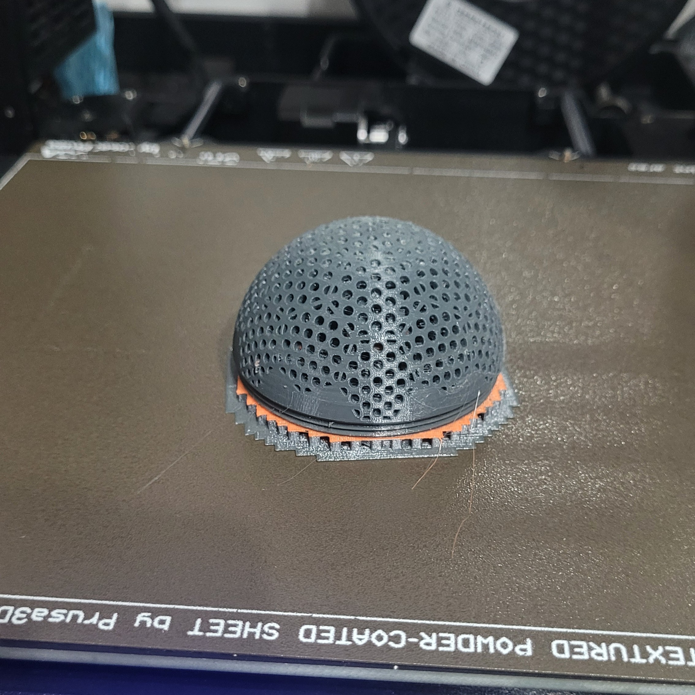
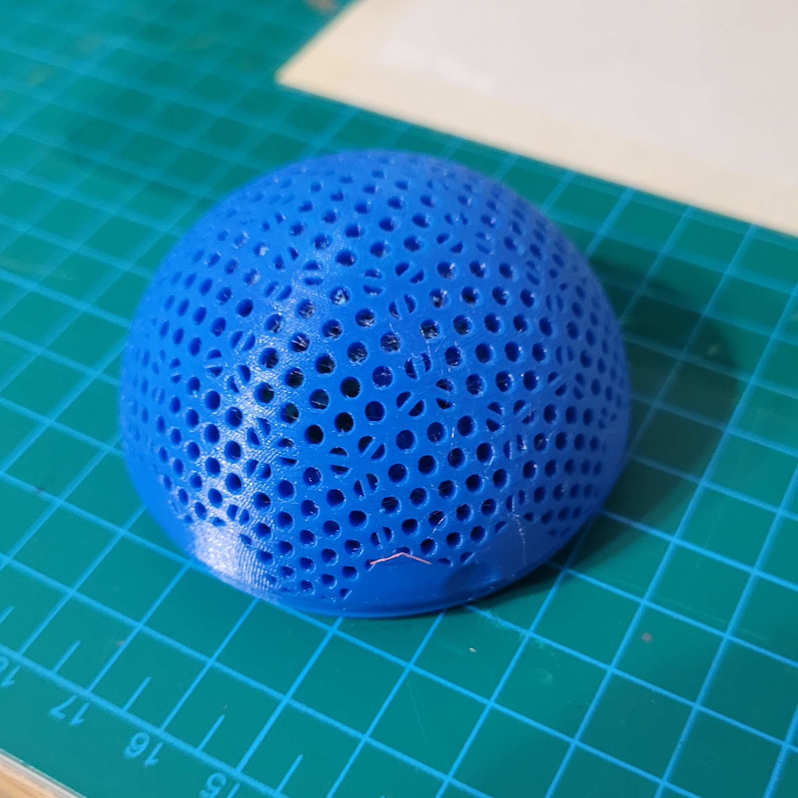
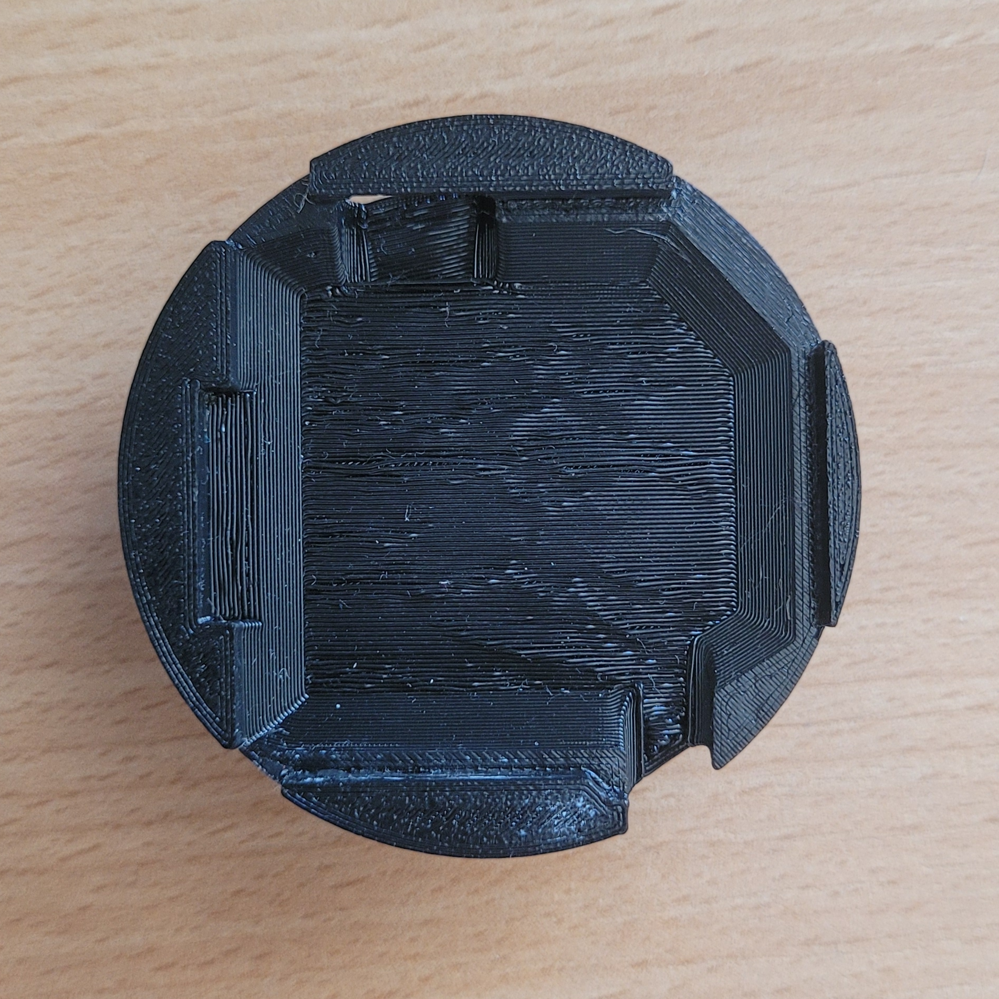
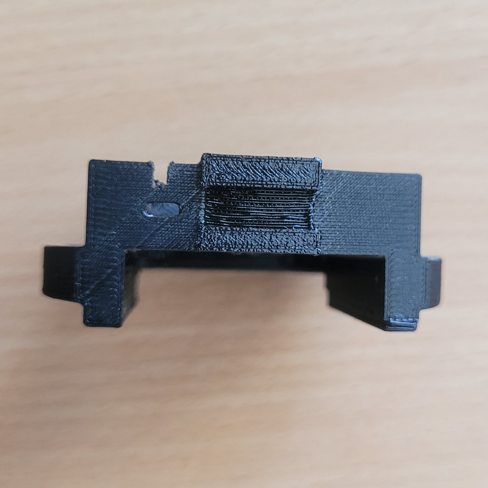
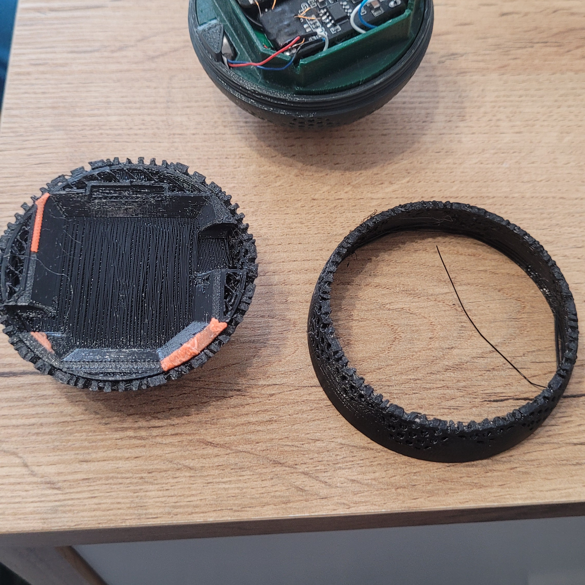
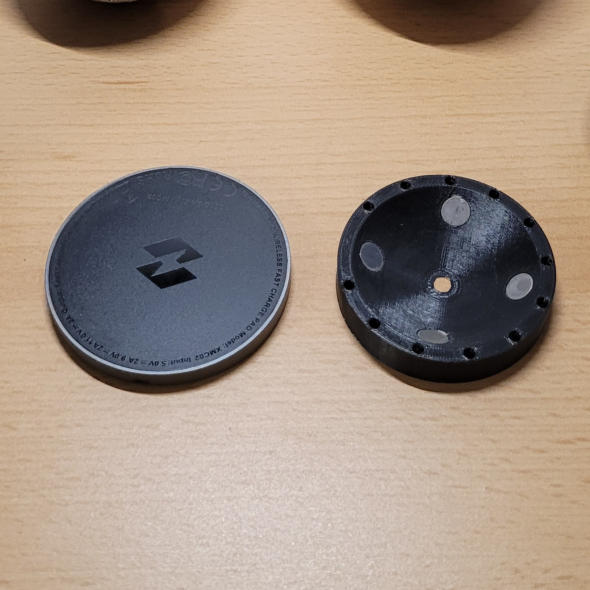

Design
Všude samá kulička
V této kapitole si povíme něco o vzhledu hračky, ovladače a obalů
Podíváme se na materiály ze kterých je hračka a obaly vytvořená
Řekneme si něco o funkčnosti návrhu jeho klady ale také zápory
Ukážeme si změny mezi jednotlivými verzemi
Vysvětlím jaká nastavení 3D tisku jsme používal jaké problémy se vyskytli a jak jsem je řešil


Ovladač
Proč je zas kulatý?
Pro tento design jsem se rozhodl z důvodu přebytku horních dílů kostry hračky; líbila se mi myšlenka, že využiji něco, co už mám. Také to odpovídalo záměru zachovat stejný styl nabíjení. Nakonec se ukázalo, že tento tvar je i ergonomický.
Talčítka mají barevné ikonky a po stranách můžeme najít znaky v Braillově písmu pro snažší identifikaci funkce jednotlivých tlačítek.
Oproti kostře hračky je zde jednodušeji vyřešené připojení baterie, nicméně tlačíko restart desky Xiao je zakryté, což zhrošuje práci při debugování.
Horní díl je násuvný a slouží k ukotvení baterie, umístění cívky pro bezdrátové nabíjení a magnetů k přichicení k nabíječce.

Kostra
Redukce podpěr
Samotná kostra prošla úpravami pro snazší 3D tisk, což zredukovalo dobu tisku, která je již tak značná (cca 12 h) kvůli použití 0,25mm trysky. Zkoušel jsem i 0,4mm trysku, nicméně výsledek mi vzhledem k malým rozměrům modelu nepřišel dostatečně kvalitní.
Nedošlo k úplnému odstranění podpěr, jelikož se uvnitř této polokoule nacházejí plochy pro uložení reproduktoru a baterie.

3D-Tisk
Perfektní mosty
Koncem roku 2024 vznikla myšlenka perfektních mostů (tzv. "Perfect Bridges") a není to dlouho, co se toto nastavení dostalo přímo do OrcaSliceru. Jelikož jsem se snažil o co nejvyšší kvalitu výtisků, byla toto jasná volba.
V OrcaSliceru toto nastavení najdete pod položkou Objekt -> Kvalita -> Bridging. Hodnoty, které je třeba změnit, jsou "Bridge flow ratio" a "External bridge density". Já používám hodnoty 1.3 a 112 %. Pro každý materiál, tiskárnu a hotend budou čísla mírně odlišná, proto si je můžete nakalibrovat sami pomocí tohoto modelu.

3D-Tisk
Multi material podpěry
Další z technik, které dokáží výtisk pozvednout a ušetřit vám trápení, jsou multimateriálové podpěry. Například materiály PLA a PETG se k sobě navzájem nelepí, a jsou tedy schopny se vzájemně podpírat. Podpěra se netiskne celá z jiného materiálu, mění se pouze kontaktní vrstva (interface). Díky tomu lze podpěru lépe oddělit a místo, kde se nacházela, si zachová hladký a konzistentní povrch.

3D-Tisk
Problém multimateriálových podpěr
I když jsou na internetu multimateriálové podpěry prezentovány jako neneprůstřelný způsob, jak dosáhnout úžasných výtisků bez jakékoliv námahy, realita je jiná a rád bych ji uvedl na pravou míru.
Základním předpokladem, aby tisk z více materiálů nebyl příliš pracný, je vlastnictví systému AMS, MMU nebo tiskárny s více extrudery (multi-extruder).
V případě multi-extruderu je tisk těchto podpěr opravdu jednoduchý. V ostatních případech však musíte zajistit, aby se tryska před zavedením druhého filamentu správně vyčistila, jinak může být výsledný výtisk křehký.
U malých dílů, které jsou tvořeny převážně perimetry, může navíc docházet ke špatnému splynutí vrstev v místě kontaktu s podpěrou. Je to způsobeno vychladnutím materiálu během pomalé výměny filamentu. Tento problém je dobře patrný na obrázku vpravo.


Nabíječka
Byl bezdrát nutný?
Zpětně mohu zhodnotit, že jsem mohl použít například magnetický dokovací konektor (magnetic docking connector). Nabíjení by mohlo být rychlejší, avšak část s designováním magnetů by nejenže neodpadla, ale nejspíše by musela být ještě přesnější než v případě cívek.
Hlavní myšlenka byla zachovat použitelnost bezdrátové nabíječky. Proto jsem vytvořil nabíjecí redukci, kterou lze v případě potřeby nabíjení jiného zařízení snadno odejmout.
Aby měl uživatel jistotu, že se hračka nebo ovladač správně nabíjí, opatřil jsem je haptickou odezvou, která se aktivuje při správném zarovnání.